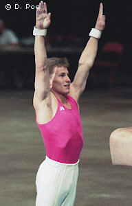

Valery Lyukin (USSR/KAZ)
1987 European AA Champion
1988 Olympic AA Silver Medalist

Medal Total
Lyukin was born December 17, 1966 in Aktyubinsk and was coached by Edege Yarov. He was the first person to perform a triple back somersault on floor exercise in international competition (1987 Moscow News). He also performed this element at the 1987 European Championships to win the all-around and floor titles. Now married to former RSG world champion Anna Kochneva, Lyukin and his wife own and coach at World Olympic Gymnastics Academy in Plano, TX. Their daughter, Nastia, is the 2008 Olympic all-around champion.
Competition Results
This page was last updated on March 13, 2004
and was last updated on October 16, 2026.
© Gymn Forum